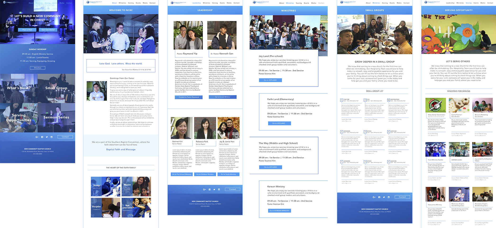
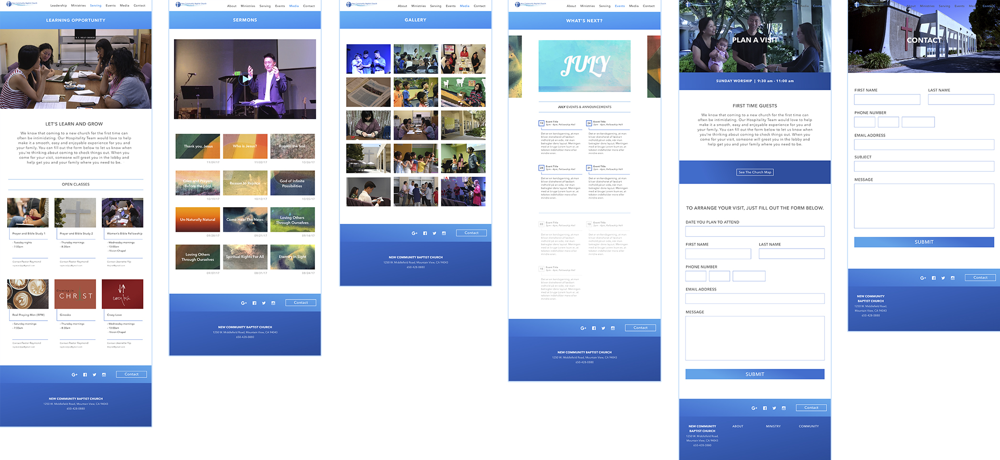

New Community Baptist Church
Web Design
New Community Baptist Church is my home church. Since I have been attending NCBC for the past 13 years, it's become the most important community to me, making my life meaningful and purposeful.
Although NCBC is located in the heart of Silicon Valley, we've had an incomplete website for a long time due to leadership changes. With a heart of serving, I volunteered to design and develop this site for our church community.
This website is designed to bring the church community together and reach out to the local community, so the focus of design was on how this site can act as a medium to foster clear communication in the church and provide information for seekers of the church in an accessible way.
UX | UI
Role
Web Designer/Front-End Web Developer
Goals to Acheive
- Bring a solution for user workflow guide the administration of easy and simple deployment of the app.
- Facilitate the portfolio uploading process
- Provide an intuitive experience in editing “My Project”
Wireframes

Mockups
/ Go to Live Prototype /
 Go to Top